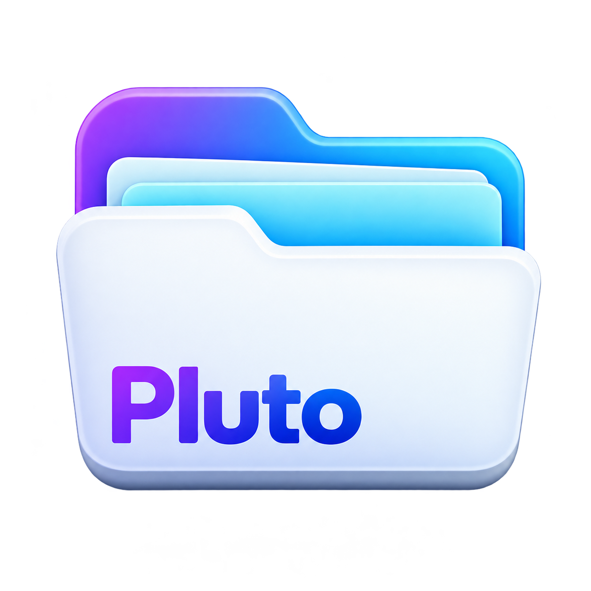

두 패널과 여러 탭
서로 다른 폴더를 나란히 열고 복사·이동하세요. 탭 잠금과 즐겨찾기로 자주 쓰는 위치를 유지합니다.

PlutoWINDOWS FILE MANAGER
두 개의 패널, 하나의 작업 공간.
Pluto로 폴더를 오가고, 파일을 찾고,
필요한 작업을 한곳에서 이어가세요.
Windows 데스크톱 앱 · 현재 비공개 배포
01 / YOUR WORKSPACE
서로 다른 폴더를 나란히 열고 복사·이동하세요. 탭 잠금과 즐겨찾기로 자주 쓰는 위치를 유지합니다.
파일 검색과 Everything 연동, 중복 파일 검색, 파일 해시 및 폴더 비교로 필요한 항목을 확인합니다.
텍스트·이미지·PDF·Markdown을 확인하고 내장 텍스트 편집기로 문서를 작성합니다.
ZIP 압축, ZIP·7z·RAR 탐색·해제, 메모·태그와 일괄 이름 변경으로 파일을 정리합니다.
02 / GOOGLE DRIVE
Google Drive와 로컬 폴더를 나란히 열어 파일을 확인하고 전송합니다. 계정 비밀번호는 Google 로그인 화면에서만 입력합니다.
Google 데이터 처리 안내Pluto의 네트워크 → 클라우드 연결에서 서비스를 선택합니다.
처음 연결하면 기본 브라우저에서 Google이 요청 권한을 안내합니다.
왼쪽에 Drive를 열고 오른쪽의 로컬 폴더를 유지합니다.
기본 권한은 읽기 전용입니다. 업로드·이름 변경·삭제는 쓰기 권한을 선택하고 승인한 경우에 요청할 수 있습니다.
03 / CONTACT
사용 방법과 Google Drive 데이터 처리에 관해 문의할 수 있습니다.
비밀번호·인증 코드·로그인 토큰은 보내지 마세요.